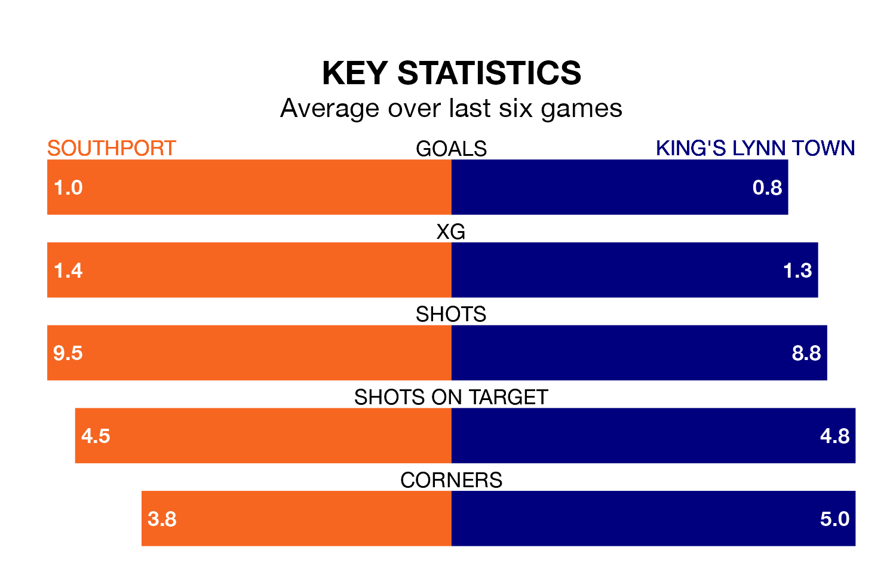

Southport host King's Lynn Town in Saturday's match at the BIG HELP Stadium looking to bounce back from defeat last time out in National League North and South.
The Sandgrounders, who sit zero in the league after 22 games, fell to a 4-0 away defeat to Tamworth on December 16.
They face a King's Lynn side who secured a draw in their last match, a 0-0 tie with Warrington Town, and who sit zero in the table.
With 25 goals in 23 games so far this season, King's Lynn are the league's joint--10th-lowest scorers with 1.1 goals per game. And they are conceding more than average, letting in 38 goals at a rate of 1.7 per game.
Southport are also below average scorers, with 1.1 goals per game, compared to a league average of 1.4. They have conceded 1.7 goals per game.
The Sandgrounders are in mixed form in National League North and South, with two wins and two draws from their last six games.
With a win and a draw over that period, Town's form is worse – they have taken four points from 18, compared to the hosts' eight.
Over the last year, Southport and King's Lynn have played each other twice. They won one each.
Their last meeting was on September 9, when Southport won 4-1 away.
